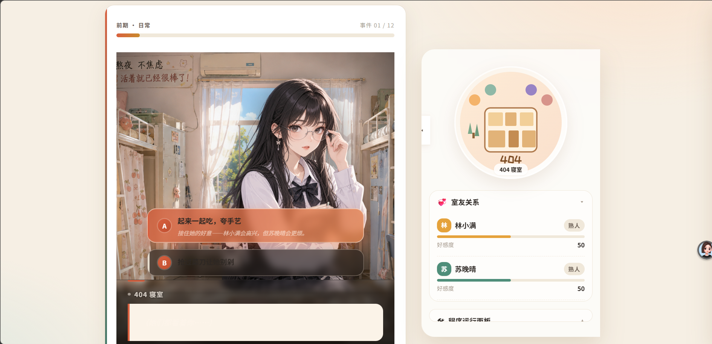
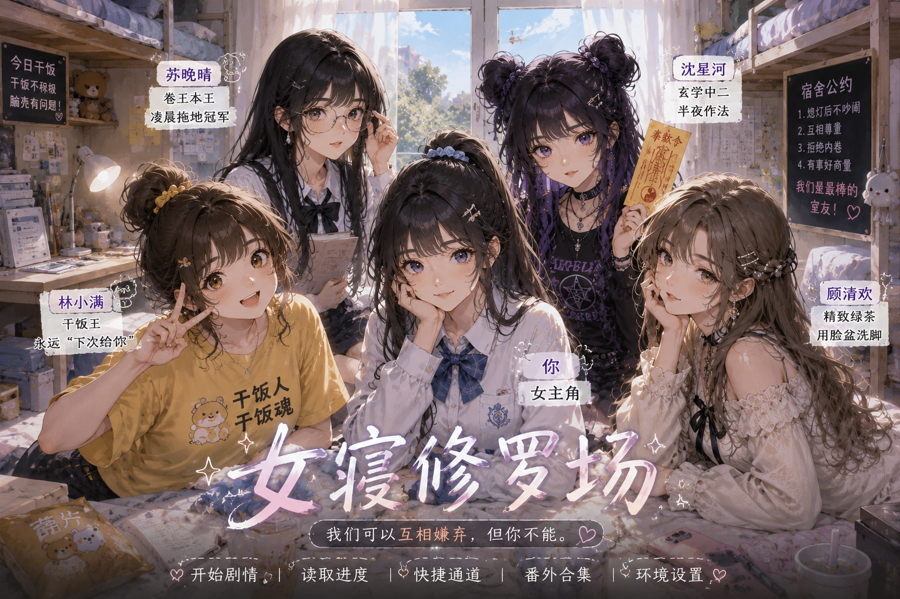
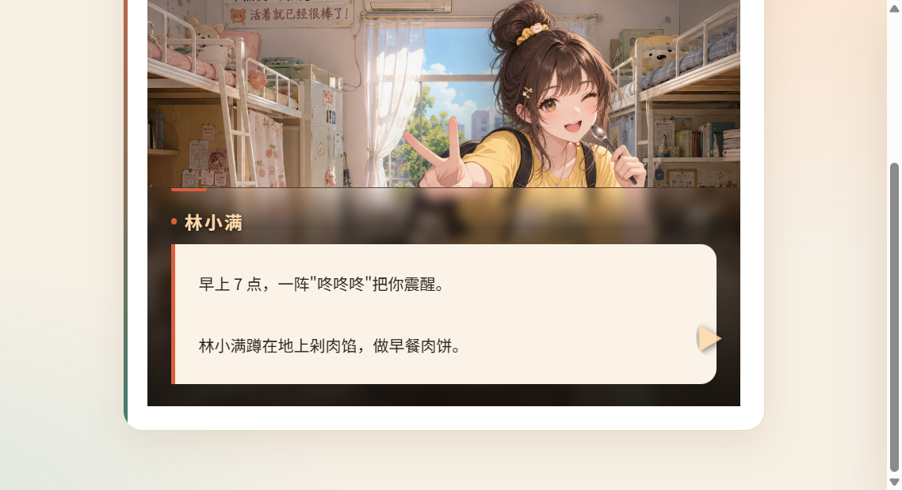
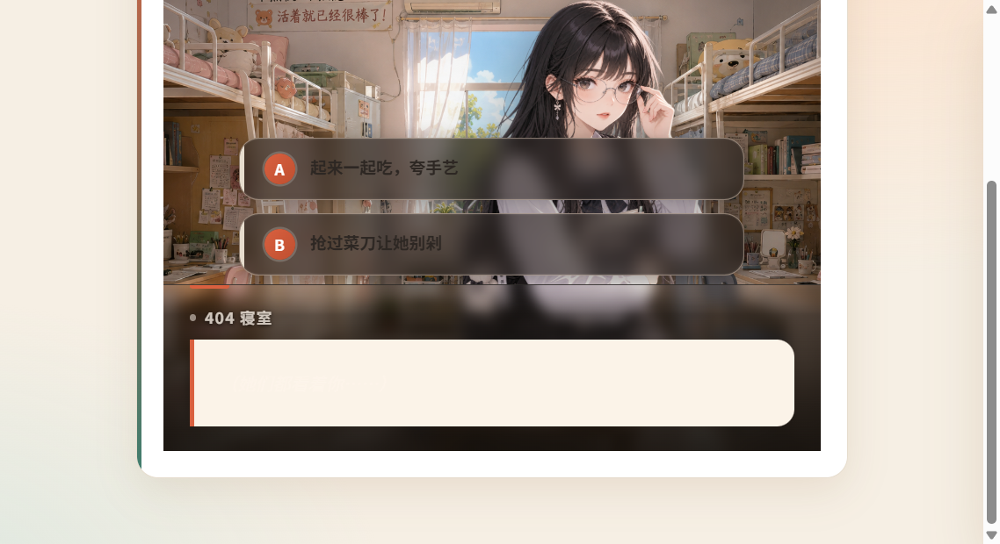
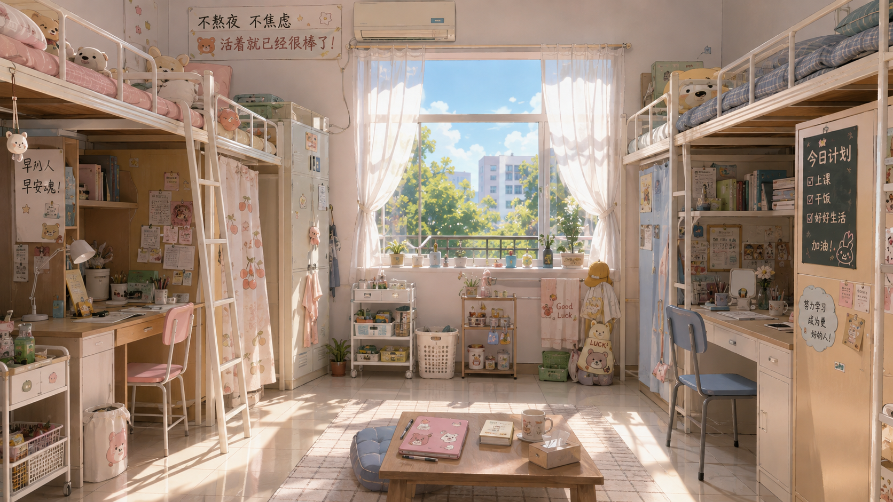
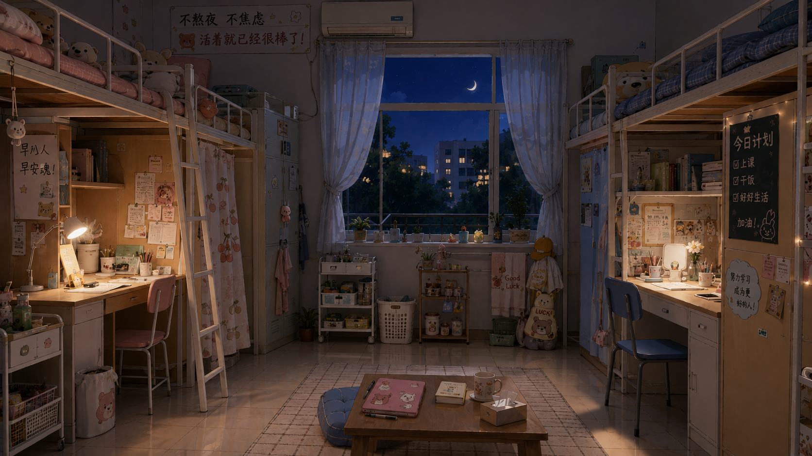
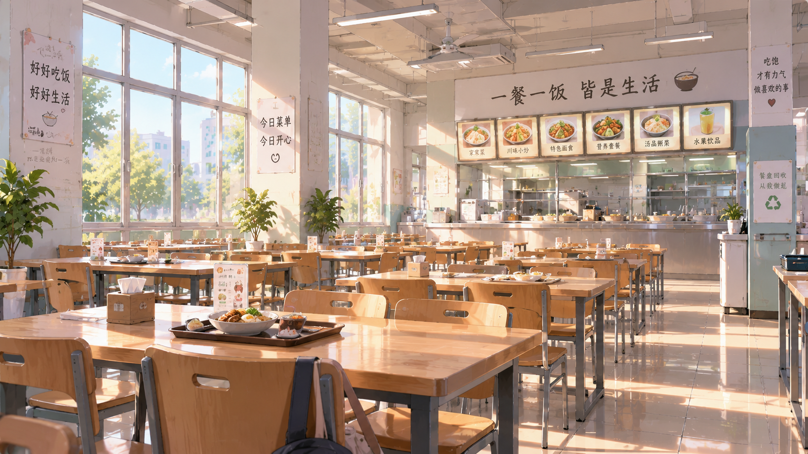
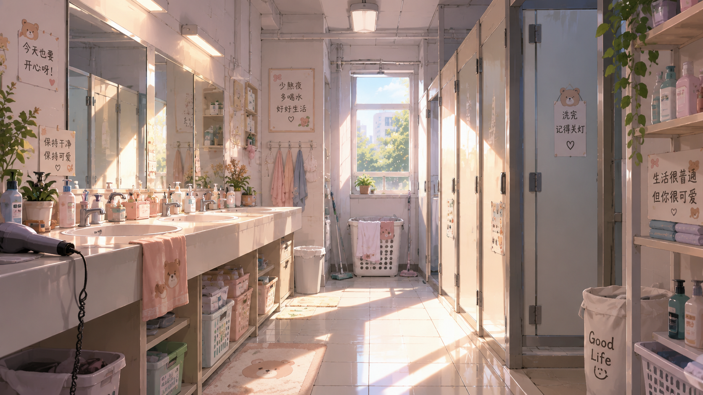

林小满
LIN XIAOMAN
CASE STUDY 02 · INTERACTIVE FICTION · 2026
AI Assisted Interactive Story
404 寝室里，你的每一个选择，都会改变四位室友的好感度与最终结局。
PLAY GAME ↗

GAMEPLAY


12 个主线事件 · 四室友关系系统 · 5 类结局 · 本地存档与重新开始（新标签页打开）
PROJECT BACKGROUND
本项目尝试将角色设定、剧情创作与网页交互结合，通过 AI 辅助完成一款以女生宿舍关系为核心的互动剧情游戏，使人物视觉、剧情内容与玩家选择形成完整的互动体验。
互动剧情游戏 · 网页端 · 2026
PROJECT GOAL
建立具有鲜明性格的人物系统
通过玩家选择影响角色关系
利用事件与关系值形成不同剧情走向
最终制作成可以实际运行体验的网页互动作品
CHARACTER SYSTEM
LIN XIAOMAN
SU WANQING

SHEN XINGHE
GU QINGHUAN
WORLD & SCENE DESIGN




场景按事件 ID 切换 · 夜间剧情使用独立夜间背景 · 背景缺失时剧情照常运行
INTERACTION LOGIC
每个事件提供 A / B 选项，部分选项下方附关系预判提示
（如“林小满会高兴，但苏晚晴会更烦”）
选项触发对应效果：四人好感度增减，并记录 keyChoices 关键选择
好感范围 0–100，四位室友初始好感均为 50，全程实时显示在关系面板
关系值跨越阈值后，室友标签与剧情可用分支随之改变
事件 09 为专属关系事件：好感 ≥ 60 的室友递来专属心意
12 个事件结束后，依据全程关系值与关键选择结算 5 类结局
RELATIONSHIP STAGES / 关系阶段（0–100）
任一室友的好感 ≥ 60 即触发她的专属剧情；多人满足时取好感最高者；好感并列时优先级为 林小满 → 苏晚晴 → 沈星河 → 顾清欢。
CREATION PROCESS
需求构思
PRD
人物设定
剧情 / 事件设计
AI 人物与场景生成
TRAE 辅助开发
页面调试
测试验收
最终作品
PROJECT FILES
真实过程资料
UI / UX ITERATION
人物立绘与对话框处在同一层级，互相遮挡。
拆为三层 AVG 结构：场景背景 → 角色立绘层 → 对话框 / 选项。立绘层固定在背景之上、对话框之下，并跟随当前说话者切换；旁白与系统文字时保持上一位角色，避免画面跳动。
玩家尚未做出选择时，误触剧情区会让剧情重新播放或跳段。
加入 awaitingChoice 选项阶段锁定：等待选择期间，点击剧情区、对话框、背景与按键全部无效；玩家做出有效选择后立即解锁并进入选择锁定，防止连点重复触发。
多人长对白阅读压力大，且难以分辨当前说话人。
对白固定在底部信息区，由深色渐变压暗层 + 暖色文字卡片承载叙事文字；说话者名按角色着色建立视觉层级： 林小满 / 苏晚晴 / 沈星河 / 顾清欢。选项卡同时展示该选择对关系的预判提示。
事件 07、12 等夜间剧情仍使用白天宿舍背景，时间与画面不匹配。
补充「宿舍夜晚」「女生宿舍楼下夜晚」两张夜间场景，按事件 ID 建立背景映射随剧情切换。背景层为纯视觉层，不参与任何剧情推进；图片加载失败时仅在控制台警告，剧情照常运行。
RESULT / 项目总结
完成从人物、场景、剧情结构到网页交互的完整互动文游，并形成可实际体验的网页作品。
REFLECTION / 反思
AI 提高了视觉素材与内容原型的制作效率，但人物一致性、场景匹配以及交互体验仍需要通过人工调整和多轮测试完成。